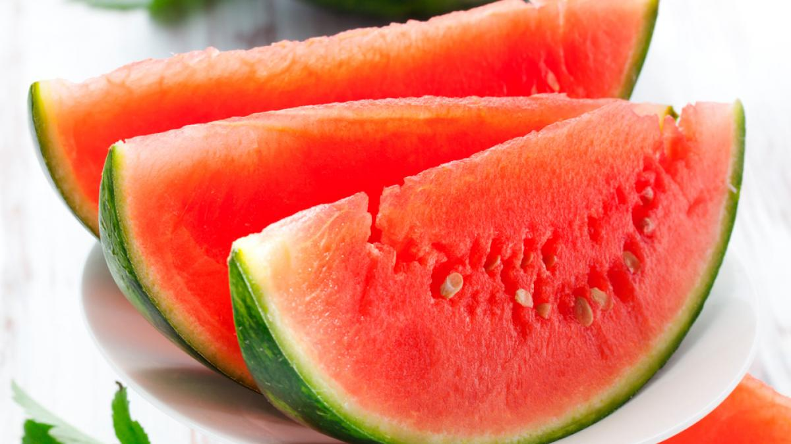

<<<<<<< HEAD
 Hyperblog alternativoTu blog de buena cabecera
=======
Hyperblog hermoshoTu blog de buena cabecera
>>>>>>> 731475dabc83623c40477a7abd49d8c98b97c96c
Hyperblog alternativoTu blog de buena cabecera
=======
Hyperblog hermoshoTu blog de buena cabecera
>>>>>>> 731475dabc83623c40477a7abd49d8c98b97c96c
Hyperblog alternativoTu blog de buena cabecera
=======
Hyperblog hermoshoTu blog de buena cabecera
>>>>>>> 731475dabc83623c40477a7abd49d8c98b97c96c
Aqui hacemos cosas. Todos son bienvenidos.
Siempre amigos de todos.
<<<<<<< HEAD =======
>>>>>>> 731475dabc83623c40477a7abd49d8c98b97c96cY si quieres pensar en frutas, existen sandías. La sandia es una fruta milenaria cuyo origen se sitúa en África tropical. Su cultivo se remonta a unos 3.500 años, en el valle del Nilo, tal y como demuestran los jeroglíficos y las esculturas halladas en el antiguo Egipto. Dado que no hay tanta disponibilidad de citas sobre la sandía en la antigüedad clásica, se piensa que su introducción en el mundo grecorromano fue bastante tardía. La verdad que sí.
La vida es hermosa.